Childhood Sexual Development
How do we grow into sexual beings? Following sexual development from before birth through the end of adolescence.
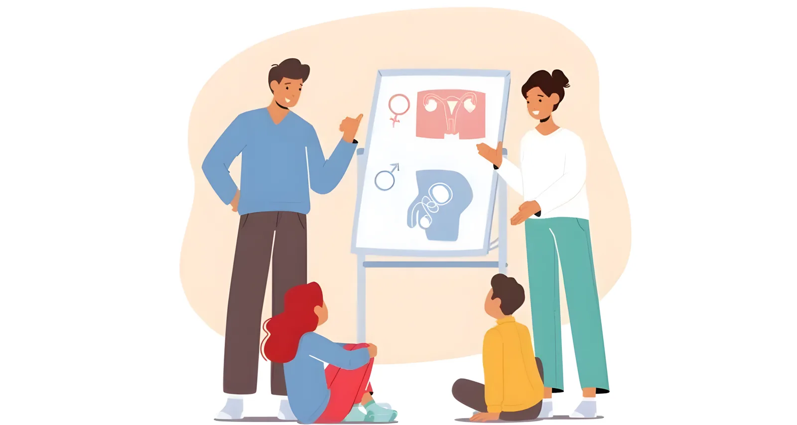
Ask most people when human sexuality "begins," and they will point to the teenage years. Puberty arrives, hormones surge, and a child suddenly turns into a young adult with romantic and sexual feelings. In real life, though, sexual feelings and urges begin far earlier.
Sexuality is not a switch that flips during puberty. It is a slow, lifelong process that starts before we are even born. Doctors have watched male fetuses have erections and even self-stimulate their genitals while still in the womb (via ultrasound; Martinson, 1994)ReferenceMartinson, F. M. (1994). The sexual life of children. Bergin & Garvey.. Newborns show reflexive sexual responses: baby boys have erections and baby girls produce vaginal lubrication in the first days of life (Martinson, 1994)ReferenceMartinson, F. M. (1994). The sexual life of children. Bergin & Garvey.. None of this means infants have sexual thoughts or desires in the way adults do, but the body's capacity for sexual response is present from the very start of life.
Why, then, do we cling to the idea that children are asexual — that is, entirely without sexual feeling or response? Part of the answer is discomfort. The sexuality of children is a subject that makes adults uneasy. We want to protect children, and acknowledging them as sexual beings can feel dangerously close to sexualizing them. But protecting children and understanding them are not at odds. The more we know about how children grow and develop, including sexually, the better we can be at making sure we support them through all aspects of development. From conception until death, humans are sexual beings, and the childhood years are among the most important in shaping who we become.

One caveat before we dig in. Directly observing children's sexual behavior is both rare and ethically impossible to arrange. As a result, most of what we know comes secondhand, from parents, teachers, and caregivers who report what they have noticed (Friedrich et al., 1998)ReferenceFriedrich, W. N., Fisher, J., Broughton, D., Houston, M., & Shafran, C. R. (1998). Normative sexual behavior in children: A contemporary sample. Pediatrics, 101(4), e9. https://doi.org/10.1542/peds.101.4.e9. Still, the picture that emerges is remarkably consistent across reporters, which allows us to draw firm conclusions about how kids mature. In this chapter, we'll follow children's sexual development from the first months of life through the end of adolescence.
10.1 The Many Dimensions of Sexual Development
One idea runs through this whole book: sexuality is about far more than genitals. When we talk about a child "developing sexually," we are not only talking about bodies and body parts. Sexual development includes a whole set of changes — in how children think, how they connect with others, how they understand gender, and how they experience pleasure. It helps to pull these apart and look at them one at a time. Researchers often describe sexual development along five dimensions, meaning five separate strands of growth that develop side by side.
The cognitive dimensionCognitive dimensionThe strand of sexual development involving a child's growing mental understanding of sex, which develops alongside language and a sense of being a separate self.View in glossary → is the growth of a child's mental understanding of sex. A two-year-old and a ten-year-old "know" wildly different things about where babies come from, what bodies are for, and what the word sex even means. This understanding develops right alongside language and a sense of burgeoning identity. As thinking matures, so does a child's ability to grasp more complex and abstract ideas about sexuality.
The social dimensionSocial dimensionThe strand of sexual development involving the degree to which a child's experience of sexuality begins to include other people. Also called the interpersonal dimension.View in glossary → is the degree to which a child's experience of sexuality begins to include other people. For a newborn, the important "other" might be a warm blanket or the comfort of being held. For a school-age child, it might be a same-gender friend or a first crush. For an adult, it becomes a romantic or sexual partner. Over the years, sexuality moves from being something a child experiences alone to something experienced with and through others.
The gender dimensionGender dimensionThe strand of sexual development involving how a person's recognition of gender, their own and others', takes shape and grows more sophisticated with age.View in glossary → is the way our recognition of gender develops, including our own and other people's. At birth, a baby has no concept of "boy" or "girl." Within the first year, infants start to notice differences. By early childhood, gender becomes one of the main categories children use to sort and make sense of others. For most people, ideas around gender grow richer and more flexible with age. Young children often heavily endorse gender stereotypes, such as almost universally drawing doctors as men and nurses as women (Stephens et al., 2016)ReferenceStephens, T., Spevak, R., Rogalin, C. L., & Hirshfield, L. E. (2016). Drawing doctors vs. nurses: Gendered perceptions of health professionals. Journal of Inquiry and Student Scholarship, 1(1), Article 2.. This is based largely on first-hand experience and noticing patterns common in their culture. But, as we mature, most of us come to recognize and (hopefully) confront such ideas as inaccurate and harmful.
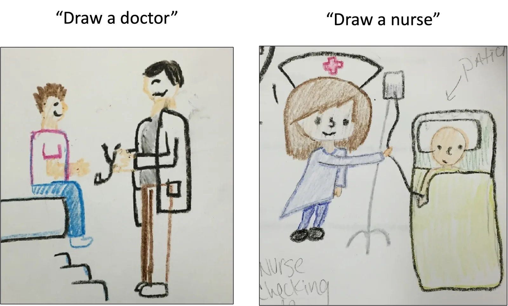
The orientation dimensionOrientation dimensionThe strand of sexual development involving how a person comes to recognize whom they are attracted to and develops the capacity to form romantic and sexual attachments.View in glossary →, tied with sexual orientation, is how we come to recognize whom we are attracted to and how we develop the capacity to form romantic and sexual attachments. Orientation unfolds gradually. It shapes an important part of our eventual sense of who we are, but the age at which people first become aware of it varies enormously from one person to the next.
The erotic dimensionErotic dimensionThe strand of sexual development involving how a person comes to experience and interpret pleasure, including whether they associate it with joy or with guilt.View in glossary → is how we come to experience and interpret pleasure itself. Do we associate physical pleasure with joy or with guilt? Do we seek pleasure in our connections with others or prefer to pursue pleasure by ourselves? A great deal of the erotic dimension is written early, in the countless small moments when a caregiver responds to a child's body and curiosity — with warmth or with shame.
These five strands do not develop in isolation. They twist together, each one influencing the others. A child who is taught the real names for body parts (a cognitive step) and whose caregivers respond warmly to natural curiosity (an erotic and social step) is laying the groundwork for healthy sexual development to come. In the sections that follow, we will use these five dimensions as a lens, watching how each one changes as a child grows from a newborn into a young adult.
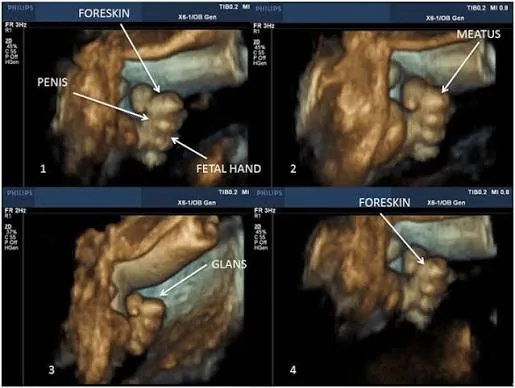
A parent notices their four-year-old carefully sorting toys into "boy toys" and "girl toys" and announcing which ones are "not allowed" for the other group. Along which dimension of sexual development is this child most clearly showing growth?
10.2 From Infancy Through Preadolescence
Sexual development from birth into young adulthood is best understood in stages. At each stage, all five dimensions are changing at once. We will walk through three broad periods — infancy, early childhood, and preadolescence — and see how a child's body, mind, and experience of pleasure shift along the way.
Before we start, one piece of history is worth knowing, because it explains a lot about how modern families handle these years. Before the nineteenth century, children in most places grew up close to the raw facts of life. They often slept in the same room as their parents, which meant occasional glimpses of adult intimacy. Many lived on farms, where animals mated, became pregnant, and gave birth in plain view. In warm weather, young children often ran around undressed and saw other children's bodies without any sense of shame or secrecy. During the 19th century, a new belief took hold: that childhood should be a protected time of sexual innocence. That belief is still with us. Many children grow up inside what researchers have called a conspiracy of silenceConspiracy of silenceThe unspoken agreement among the adults around a child never to discuss sex openly. It tends to teach children that sex is a shameful topic.View in glossary → — an unspoken agreement among the adults around them to never discuss sex openly. Most children in the U.S. rarely talk with their parents about sex, rarely see their parents naked, and never see sex for themselves.
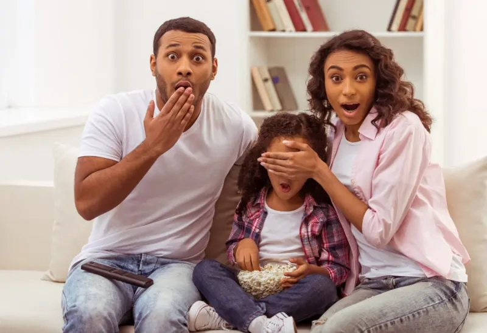
Is that silence protective? The research suggests it is not especially helpful, and that the fears behind it are mostly unfounded. Some clinicians once worried that a child seeing a parent naked, or catching a glimpse of parents having sex, would be harmed by the experience. Careful study does not bear this out. In fact, one line of research found that adults who had, as children, seen their parents having sex reported fewer sexual problems later in life (Okami et al., 1998)ReferenceOkami, P., Olmstead, R., Abramson, P. R., & Pendleton, L. (1998). Early childhood exposure to parental nudity and scenes of parental sexuality ("primal scenes"): An 18-year longitudinal study of outcome. Archives of Sexual Behavior, 27(4), 361–384. https://doi.org/10.1023/a:1018736109563. Whatever their level of exposure, most young children are naturally curious and full of questions. "Where do babies come from?" "Why are my genitals different from theirs?" "Why does it feel good when I touch my genitals?" The range of how adults respond — with honesty, secrecy, or a fairy-tale version of reality — teaches children their very first lessons about sex.
Infancy (Birth to Age 2)
For an infant, the whole skin surface is, in a sense, an erogenous zone. Babies experience a powerful need for comfort contactComfort contactThe warm physical touch that soothes and reassures an infant. In infancy this need is not yet separated from other needs, and being deprived of it can cause lasting harm.View in glossary →, meaning warm physical touch that soothes and reassures them (Martinson, 1994)ReferenceMartinson, F. M. (1994). The sexual life of children. Bergin & Garvey.. A baby explores the world, and its own body, through touch and movement, slowly learning which sensations feel good and which feel bad. Cuddling, feeding, and a warm bath land on the "good" side, while a wet diaper and an empty stomach land on the "bad" side.
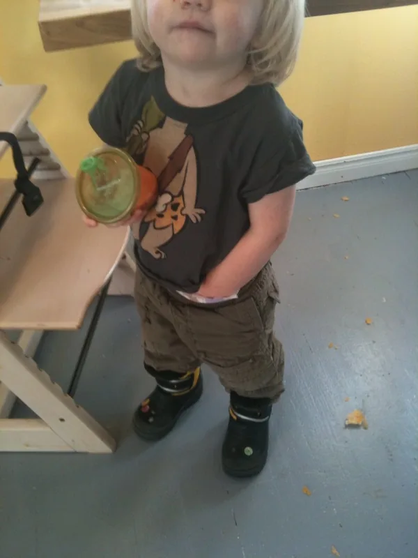
Along the way, ordinary tactile exploration sometimes drifts into what researchers call unfocused masturbationMasturbationSelf-touching of the genitals that produces pleasurable feeling. In infancy and early childhood it is unfocused and experienced as self-soothing, with no adult sexual meaning.View in glossary → — self-touching of the genitals that produces a pleasant feeling (Friedrich et al., 1998)ReferenceFriedrich, W. N., Fisher, J., Broughton, D., Houston, M., & Shafran, C. R. (1998). Normative sexual behavior in children: A contemporary sample. Pediatrics, 101(4), e9. https://doi.org/10.1542/peds.101.4.e9. It is crucial to understand what this is and is not. The infant has no cognitive ability to give the behavior sexual meaning. A genital response is simply lumped in with other good feelings, part of a general pattern of behavior that gives pleasure. Reflexive erections and vaginal lubrication can be triggered by all sorts of ordinary things: the rhythm of a moving car, the warmth of sand, a diaper change, or even a burst of excitement or fear. These responses are not signs of adult-style desire. They are reflexes — part of a generalized arousal response that has nothing to do with sexual intent.
The social dimension in infancy is defined by total self-centeredness. Early psychologists used the term egocentric, which means the infant experiences their caregivers less as separate people than as extensions of themselves. What infants crave, above all, is comfort contact, and children quickly figure out what behaviors get them what they need, such as crying or wriggling toward a warm body. When children are persistently deprived of comfort contact, the consequences can be serious and lasting. The attachments an infant forms with caregivers set a pattern for future relationships and for how the child will experience closeness and sensuality. We'll discuss this in more detail later in this chapter.
Gender is developing too, earlier than most people assume. It is a common mistake to think infants have no sense of gender at all. In a well-known set of studies, the psychologist Paul Quinn found that babies as young as 3 months could tell male and female faces apart, with most infants showing a preference for female faces (Quinn et al., 2002)ReferenceQuinn, P. C., Yahr, J., Kuhn, A., Slater, A. M., & Pascalis, O. (2002). Representation of the gender of human faces by infants: A preference for female. Perception, 31(9), 1109–1121. https://doi.org/10.1068/p3331. This preference seemed to have to do primarily with who gave them the most comfort. When Quinn's team looked at babies raised mainly by fathers, the preference flipped toward male faces.
Even at this early age, the adults around a child shape gender development by how they treat sons differently than daughters. Research finds that parents, and fathers in particular, tend to coo, cuddle, and use baby talk more with daughters, treating them as more fragile, while using more grown-up speech and rougher, more physical play with sons (Halpern & Perry-Jenkins, 2016; Berk, 2009)ReferencesHalpern, H. P., & Perry-Jenkins, M. (2016). Parents' gender ideology and gendered behavior as predictors of children's gender-role attitudes: A longitudinal exploration. Sex Roles, 74(11–12), 527–542. | Berk, L. E. (2009). Child development (8th ed.). Pearson.. Fathers who roughhouse just as happily with their daughters tend to raise children with less rigid ideas about what boys and girls are supposed to be.
The orientation and erotic dimensions are simpler in infancy. In terms of orientation, infants orient toward the familiar — a known voice, a known face, a known smell. Erotically, pleasure is reflexive and relaxing, handled with pure pragmatism: if it feels good, seek more; if it feels bad, stop. Over these first two years a body mapBody mapA person's developing internal sense of which parts of the body feel good and which feel bad. It begins to form in infancy and is shaped heavily by how caregivers respond to a child's exploration.View in glossary → begins to form, meaning a rough sense of which parts of the body feel good and which feel bad (Martinson, 1994)ReferenceMartinson, F. M. (1994). The sexual life of children. Bergin & Garvey..
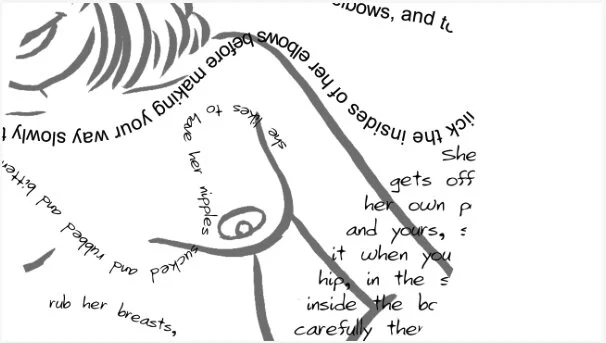
A new parent is alarmed to notice that their infant son sometimes has an erection during a diaper change. Based on what we know about infant development, the best explanation is that this is:
Early Childhood (Ages 2 to 8)
The early childhood years are when sexuality becomes visibly social and curious. Many parents still fear that a child who sees a naked adult body will be traumatized. The evidence points the other way: seeing ordinary nudity helps children grow comfortable with their own bodies and learn about anatomical differences between the sexes (Okami, 1995)ReferenceOkami, P. (1995). Childhood exposure to parental nudity, parent-child co-sleeping, and "primal scenes": A review of clinical opinion and empirical evidence. The Journal of Sex Research, 32(1), 51–63. https://doi.org/10.1080/00224499509551774. Around this age, natural curiosity about bodies and where babies come from blossoms into a steady stream of questions.
The typical behaviors of this stage are gentle and exploratory. Kissing, hugging, and stroking are common. Children may start undressing and showing their bodies to others. Games like "playing doctor" or "let me see yours, and I'll let you see mine" become popular. About half of parents report noticing this kind of sex playSex playCuriosity-driven behavior, such as "playing doctor," in which young children show or touch one another's genitals. It reflects exploration and imitation of adult roles rather than adult-style sexual interaction, and it is reported by roughly a quarter to a half of parents.View in glossary → — children showing or touching one another's genitals out of curiosity (Friedrich et al., 1998)ReferenceFriedrich, W. N., Fisher, J., Broughton, D., Houston, M., & Shafran, C. R. (1998). Normative sexual behavior in children: A contemporary sample. Pediatrics, 101(4), e9. https://doi.org/10.1542/peds.101.4.e9. It is important to note that such play reflects curiosity and imitation of adult roles far more than any sexual interaction in the adult sense. Children are learning about bodies and trying on grown-up roles. Caregivers who stumble onto such play don't need to overreact by shaming or punishing their curious children. Instead, such instances present a good opportunity to teach kids healthy boundaries around their bodies and how to interact with others.
True masturbation also appears in this stage, arising spontaneously and experienced simply as a form of self-pleasure. According to surveys of parents, roughly 60% of boys and 45% of girls have begun masturbating before age six, with behaviors ranging from manual touching to rubbing against furniture (Friedrich et al., 1998; De Graaf & Rademakers, 2006)ReferencesFriedrich, W. N., Fisher, J., Broughton, D., Houston, M., & Shafran, C. R. (1998). Normative sexual behavior in children: A contemporary sample. Pediatrics, 101(4), e9. https://doi.org/10.1542/peds.101.4.e9 | De Graaf, H., & Rademakers, J. (2006). Sexual development of prepubertal children. Journal of Psychology & Human Sexuality, 18(1), 1–21.. Yet what parents report varies dramatically by country. The vast majority of mothers in Europe say they have seen their young child touch their genitals, but only about half of U.S. mothers report the same, most likely reflecting greater European openness about childhood sexuality rather than any real difference in children (Larsson et al., 2000; De Graaf & Rademakers, 2006)ReferencesLarsson, I., Svedin, C.-G., & Friedrich, W. N. (2000). Differences and similarities in sexual behaviour among preschoolers in Sweden and USA. Nordic Journal of Psychiatry, 54(4), 251–257. | De Graaf, H., & Rademakers, J. (2006). Sexual development of prepubertal children. Journal of Psychology & Human Sexuality, 18(1), 1–21.. Behind the American reluctance often sits a misguided fear that masturbation is harmful or improper, especially in children (Klass, 2018)ReferenceKlass, P. (2018, December 10). Why is children's masturbation such a secret? The New York Times. https://www.nytimes.com/2018/12/10/well/family/why-is-childrens-masturbation-such-a-secret.html. Pediatricians usually reassure parents that the behavior is normal, though they less often offer concrete guidance on how to handle it, and girls in particular tend to be left out of these conversations altogether.
What about more involved sexual play? One study asked young adults in the United States to recall the voluntary sexual activities they had engaged in with other children between the ages of 6 and 10 (Larsson & Svedin, 2002)ReferenceLarsson, I., & Svedin, C.-G. (2002). Sexual experiences in childhood: Young adults' recollections. Archives of Sexual Behavior, 31(3), 263–273. https://doi.org/10.1023/A:1015252903931. Talking about sex, kissing and hugging, and showing one's genitals were all fairly common. However, only very small percentages remembered any voluntary penetrative activity. In other words, curiosity-driven looking and touching is a normal part of childhood; penetrative sexual acts among young children are not, and their presence is a signal that something may be wrong. The same body of research reminds us that not all such contact is voluntary. Some adults recalled being coerced into sexual activity by another child through trickery, bribes, threats, or force. It's important for parents to recognize what forms of sex play are developmentally normal and healthy, and what forms may be a sign of abuse.
In the cognitive dimension, children this age start to grasp the meaning of sex as an actual act — typically understanding it as when a penis enters a vagina. Children also begin to develop love mapsLove mapsA person's developing internal picture of what a romantic and sexual relationship should look and feel like. Love maps begin forming in early childhood and grow richer through preadolescence.View in glossary →, which is a cognitive understanding of what a romantic and sexual relationship should look and feel like (Money, 1986)ReferenceMoney, J. (1986). Lovemaps: Clinical concepts of sexual/erotic health and pathology, paraphilia, and gender transposition in childhood, adolescence, and maturity. Irvington.. They may come to understand sex as something that "married people do," or that "men get women flowers when they're in love." This is a great opportunity for caregivers to teach children about sex and relationships. Information tends to stick best when it is tied to a real, relevant moment — while getting dressed, while looking at art, while watching a couple on TV. Explanation of sex and "where babies come from" can grow more detailed with age. For a four-year-old, the explanation may just be that "a baby grows in a special place inside the mother." By the age of 6–8, it's perfectly fine to explain sex fully. In fact, knowing what sex actually is can help protect children from being sexually mistreated by others (Astle et al., 2023; Kim et al., 2023)ReferencesAstle, S., Rivas-Koehl, D., Rivas-Koehl, M., & Mendez, S. (2023). Timing the talks: Exploring children's ages at parent–child conversations about gender, sexual orientation, and various sexual behaviors. Sexuality Research and Social Policy, 21, 1–21. https://doi.org/10.1007/s13178-023-00894-0 | Kim, E. J., Park, B., Kim, S. K., Park, M. J., Lee, J. Y., Jo, A. R., Kim, M. J., & Shin, H. N. (2023). A meta-analysis of the effects of comprehensive sexuality education programs on children and adolescents. Healthcare, 11(18), 2511. https://doi.org/10.3390/healthcare11182511.
In the social dimension, children become "other-incorporative," folding other people into their emotional world. Through daily interactions with caregivers, they form attachments that tend to feel secure, anxious, or avoidant — patterns that, as we will see shortly, affect later adult relationships.
The gender dimension takes a big leap in early childhood. As young as 2 or 3, children begin asserting a gender label: "I'm a boy," "I'm a girl." They start absorbing gender roles from family, culture, and the wider world, and for a while gender identity often becomes quite rigid, rehearsed through fierce opinions about which toys and activities belong to which group. Even by age two-and-a-half, girls in Western societies show a preference for pink clothes and toys, while boys actively avoid the color (Lobue & DeLoache, 2011)ReferenceLobue, V., & DeLoache, J. S. (2011). Pretty in pink: The early development of gender-stereotyped colour preferences. The British Journal of Developmental Psychology, 29(Pt 3), 656–667. https://doi.org/10.1111/j.2044-835X.2011.02027.x. Ironically, pink used to be seen as a masculine color. In a popular fashion journal of the 1800s, the authors wrote, "The generally accepted rule is pink for the boys, and blue for the girls. The reason is that pink, being a more decided and stronger color, is more suitable for the boy, while blue, which is more delicate and dainty, is prettier for the girl" (cited in Grannan, 2021)ReferenceGrannan, C. (2021). Has pink always been a "girly" color? Encyclopædia Britannica. https://www.britannica.com/story/has-pink-always-been-a-girly-color. Clearly, these "gender rules" are not set by biology but are simply cultural ideas that children absorb.
Around the ages of 4–5, children develop the idea of gender constancyGender constancyThe understanding, which develops in steps during childhood, that a person's gender is stable over time and is not changed by surface features like a haircut or clothing.View in glossary → — that a person's gender is stable over time and not changed by surface features like a haircut or a costume (Kohlberg, 1966)ReferenceKohlberg, L. (1966). A cognitive-developmental analysis of children's sex-role concepts and attitudes. In E. E. Maccoby (Ed.), The development of sex differences (pp. 82–173). Stanford University Press.. A very young child may think a girl becomes a boy if she puts on "boy" clothes, but an older child knows that clothes don't determine a person's gender.
This is also a period in which a child's trans identity may become more visible. Many trans adults recall that, as children, they began developing an idea that they were "born into the wrong body," or that they preferred the toys, clothes, and names of the other gender. Findings from a large, ongoing research project by Kristina Olson find that many (although not all) transgender adults report that, as children, they were more accepting of gender nonconformity, such as wearing opposite-sex clothing or wishing to be addressed using opposite-sex pronouns (Olson et al., 2015)ReferenceOlson, K. R., Key, A. C., & Eaton, N. R. (2015). Gender cognition in transgender children. Psychological Science, 26(4), 467–474. https://doi.org/10.1177/0956797614568156. Her research shows that trans children who are supported by their families and communities during this time show no elevated risk of depression or anxiety, compared to gender-conforming children (Olson et al., 2016)ReferenceOlson, K. R., Durwood, L., DeMeules, M., & McLaughlin, K. A. (2016). Mental health of transgender children who are supported in their identities. Pediatrics, 137(3), e20153223. https://doi.org/10.1542/peds.2015-3223. While rates of mental illness are 3–6 times higher in the trans community than in the general population, Olson's research shows that most (if not all) of this is due to having their identities rejected, rather than supported (Wanta et al., 2019)ReferenceWanta, J. W., Niforatos, J. D., Durbak, E., Viguera, A., & Altinay, M. (2019). Mental health diagnoses among transgender patients in the clinical setting: An all-payer electronic health record study. Transgender Health, 4(1), 313–315. https://doi.org/10.1089/trgh.2019.0029.

In the orientation dimension, most children this age gravitate toward strong same-gender friendships. The age at which a person first becomes aware of their sexual orientation varies widely. Some gay and lesbian adults recall strong same-gender attractions in early childhood, while others become aware only much later. And in the erotic dimension, the body map grows more detailed as children discover what body areas and behaviors feel good. Here again, a caregiver's response matters: warm acceptance tends to predict healthier adult sexuality, while shame and punishment tend to predict later problems (Yang et al., 2024)ReferenceYang, T. A., Dolan, A., Hernandez, V., Kaufman, A., Kruk, M., Robbins, K., & Conley, T. D. (2024). Associations between negative sexual messaging in childhood and sex guilt in adulthood. Analyses of Social Issues and Public Policy, 24(3), 997–1016. https://doi.org/10.1111/asap.12423.
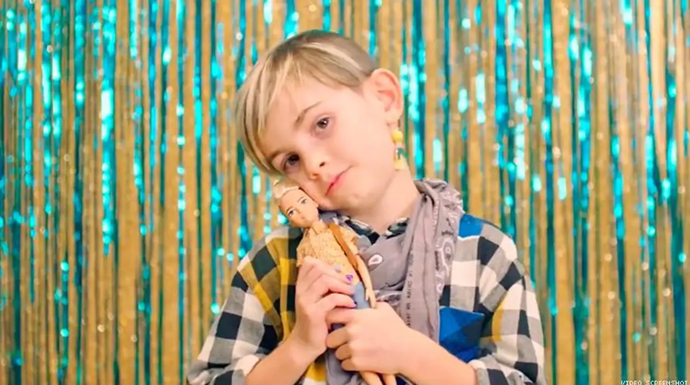
A preschool teacher finds two four-year-olds who have taken off their shirts and are curiously looking at each other's bodies while "playing doctor." Based on the research, the most accurate interpretation is that this behavior is:
Preadolescence (Ages 8 to 12)
Preadolescence is the runway to puberty. During these years, children experience a slow chain of hormonal events that will eventually launch puberty. This brings a modest uptick in sexual interest and behavior. Masturbation may take on a more deliberate, adult-like form. The age at which boys begin intentionally masturbating is closely tied to when they enter puberty, while for girls the onset is much more spread out and less clearly linked to physical development. Some preadolescents begin to dabble in coupled activities like dating and kissing. Kids this age may develop "crushes" on boys and girls they like. Socially, we call these types of feelings "other-incorporative," as they involve sexual feelings toward others.
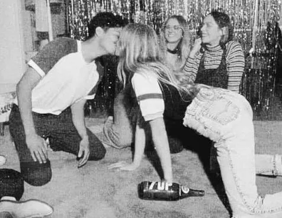
Cognitively, a new sexual self-consciousnessSexual self-consciousnessA new awareness of oneself as a sexual being that emerges in preadolescence, often accompanied by a deliberate search for information about sex.View in glossary → sets in, and with it a deliberate hunt for information about sex. Abstract jokes, teasing, and curiosity about explicit images often begin here. These are often early attempts to understand sexuality, as well as make light of a subject that may seem strange and even a bit scary. A popular schoolyard joke is, "Why isn't there a pregnant Barbie doll? ...Because Ken came in another box!" Hidden in the taboo punchline is a tacit understanding of sex, pregnancy, and female anatomy. "Getting the joke" is like a rite of passage for many preteens; a demonstration that they "know the secrets" of the adult world.
In the gender dimension, preteens often impose gender segregation on themselves, and gender roles grow more rigid. Most kids this age insist on expressing their gender through stereotypically masculine or feminine clothing and accessories, and they grow markedly less tolerant of peers who break gender rules. Gender-nonconforming boys tend to have the hardest time, often facing social rejection and even physical attacks (Toomey et al., 2010)ReferenceToomey, R. B., Ryan, C., Diaz, R. M., Card, N. A., & Russell, S. T. (2010). Gender-nonconforming lesbian, gay, bisexual, and transgender youth: School victimization and young adult psychosocial adjustment. Developmental Psychology, 46(6), 1580–1589. https://doi.org/10.1037/a0020705. While girls are sometimes singled out for "boyish" behavior, some traditionally masculine traits, such as being assertive and athletic, are often praised in girls too (van Beusekom et al., 2020)Referencevan Beusekom, G., Collier, K. L., Bos, H. M. W., Sandfort, T. G. M., & Overbeek, G. (2020). Gender nonconformity and peer victimization: Sex and sexual attraction differences by age. Journal of Sex Research, 57(2), 234–246. https://doi.org/10.1080/00224499.2019.1591334.
In the orientation dimension, this is the age when many kids begin to develop "feelings" toward others of the same or opposite gender. Same-sex attraction is common among boys and girls, perhaps because of broader gender segregation during these years (Li & Hines, 2016)ReferenceLi, G., & Hines, M. (2016). In search of emerging same-sex sexuality: Romantic attractions at age 13 years. Archives of Sexual Behavior, 45(7), 1839–1849. https://doi.org/10.1007/s10508-016-0726-2. Early childhood crushes don't necessarily dictate adult sexual orientation, but it is a time when many LGBT+ people report experiencing a "sexual awakening." Although the process of "coming out" — which involves self-identifying as LGBT+ — typically doesn't happen until children are teenagers or young adults (Beard et al., 2015)ReferenceBeard, K. W., Keeney, J., & Thoms, J. (2015). Childhood and adolescent sexual behaviors predict adult sexual orientations. Cogent Psychology, 2(1), Article 1067568. https://doi.org/10.1080/23311908.2015.1067568.
During this time, love maps grow richer and more complex, as preteens build up more detailed expectations about sex and romantic relationships. The erotic dimension displays an emerging sense of oneself as a sexual being, colored strongly by whether the child has internalized messages about what types of sexual expression are acceptable and whether sexuality itself is good or bad.
A sixth-grade teacher notices that her 11-year-old students have suddenly started sorting themselves strictly by gender at lunch, and several boys openly mock a classmate who joins the girls to jump rope. According to the chapter, this spike in rigid gender policing during preadolescence is best understood as:
10.3 Attachment: A First Blueprint for Love
Of all the things that happen in the first years of life, few matter more than attachmentAttachmentThe deep emotional bond that forms between an infant and a primary caregiver in the first years of life. Its quality shapes a person's capacity for emotional and sexual closeness in adulthood.View in glossary → — the deep emotional bond that forms between a child and their caregivers (Bowlby, 1969)ReferenceBowlby, J. (1969). Attachment and loss: Vol. 1. Attachment. Basic Books.. This bond begins in the hours after birth and continues to develop throughout childhood. Attachment is built out of thousands of ordinary moments: being held, fed, soothed, and touched. These are a person's first experiences of love. And the quality of these first bonds — whether they are steady and secure or unstable and frustrating — can shape a person's capacity for emotional and sexual closeness for the rest of their life. Attachment is where the emotional groundwork of future relationships is established.
Styles of Attachment
Attachment stylesAttachment stylesConsistent patterns in how infants relate to their caregivers, usually grouped as secure, anxious, and avoidant. These early patterns tend to persist and to resemble a person's romantic attachment style as an adult.View in glossary → are patterns in how infants relate to their caregivers, which tend to persist and influence adult relationships (Ainsworth et al., 1978)ReferenceAinsworth, M. D. S., Blehar, M. C., Waters, E., & Wall, S. (1978). Patterns of attachment: A psychological study of the Strange Situation. Lawrence Erlbaum Associates.. The idea grows out of John Bowlby's theory that human infants are biologically prepared to form a bond with a primary caregiver, a bond that serves the evolutionary function of keeping a vulnerable child close to protection (Bowlby, 1969)ReferenceBowlby, J. (1969). Attachment and loss: Vol. 1. Attachment. Basic Books.. There are three established childhood attachment styles, which are based on how well children can utilize their caregivers as sources of comfort and security.
Children with secure attachmentSecure attachmentThe healthiest and most common attachment style, in which a child uses the caregiver as a safe base, is distressed by separation, and is quickly comforted at reunion. It reflects trust that the caregiver is reliable.View in glossary → use the caregiver as a safe base. They happily and boldly explore new environments when caregivers are present. They are often confident and easy-going, even around strangers. But if a caregiver leaves the child alone, they will become quickly disoriented and upset. However, the child is also quickly soothed once the caregiver returns. This underlies a simple understanding that the caregiver is a reliable source of protection and comfort, which can be used when needed. Across studies in eight countries, roughly two-thirds of infants are classified as secure (van IJzendoorn & Kroonenberg, 1988)Referencevan IJzendoorn, M. H., & Kroonenberg, P. M. (1988). Cross-cultural patterns of attachment: A meta-analysis of the Strange Situation. Child Development, 59(1), 147–156.. They tend to have parents who are consistently available and emotionally supportive (De Wolff & van IJzendoorn, 1997)ReferenceDe Wolff, M. S., & van IJzendoorn, M. H. (1997). Sensitivity and attachment: A meta-analysis on parental antecedents of infant attachment. Child Development, 68(4), 571–591..
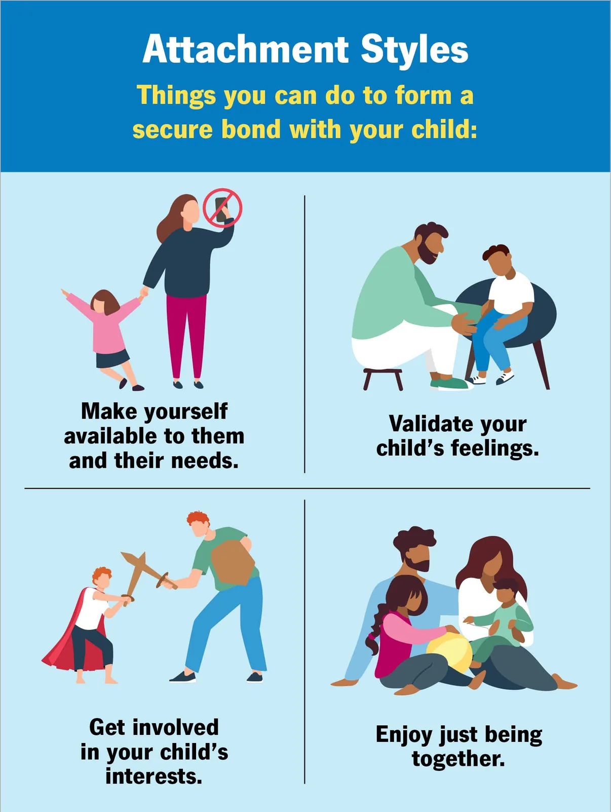
Children with anxious attachmentAnxious attachmentAn insecure attachment style in which a child is clingy and easily distressed, and at reunion seeks comfort while also resisting it. It reflects uncertainty about whether the caregiver can be relied on. Also called insecure or resistant attachment.View in glossary →, sometimes called resistant attachment, are frequently nervous and clingy. They may be too upset to explore even attractive spaces, such as rooms with toys and other children. If a caregiver leaves an anxious infant alone, they quickly become panicked and cannot be easily soothed, even when the caregiver returns. This pattern belies uncertainty about whether a caregiver will be there to soothe and protect when they're needed (Cassidy & Berlin, 1994)ReferenceCassidy, J., & Berlin, L. J. (1994). The insecure/ambivalent pattern of attachment: Theory and research. Child Development, 65(4), 971–991.. About 15% of infants and young children show this attachment style (van IJzendoorn & Kroonenberg, 1988)Referencevan IJzendoorn, M. H., & Kroonenberg, P. M. (1988). Cross-cultural patterns of attachment: A meta-analysis of the Strange Situation. Child Development, 59(1), 147–156.. While not always the case, many such children have parents who are loving but sometimes unavailable. This can be due to a parent who is extremely busy, such as those who work multiple jobs, are raising many children, or are caregivers for their own parents.
Children with avoidant attachmentAvoidant attachmentAn insecure attachment style in which a child appears unbothered by separation and ignores or avoids the caregiver at reunion. The outward calm often masks underlying stress rather than reflecting true security.View in glossary → appear, on the surface, unbothered. They explore without much reference to the caregiver, show little distress at separation, and pointedly ignore or avoid the caregiver when they return. This apparent coolness is not the same as security. Physiological measures suggest these children are stressed, but they have learned to mask it (Spangler & Grossmann, 1993)ReferenceSpangler, G., & Grossmann, K. E. (1993). Biobehavioral organization in securely and insecurely attached infants. Child Development, 64(5), 1439–1450.. This is often because their bids for comfort (e.g., crying) have been punished in the past. About 20% of infants and young children show this pattern (van IJzendoorn & Kroonenberg, 1988)Referencevan IJzendoorn, M. H., & Kroonenberg, P. M. (1988). Cross-cultural patterns of attachment: A meta-analysis of the Strange Situation. Child Development, 59(1), 147–156..
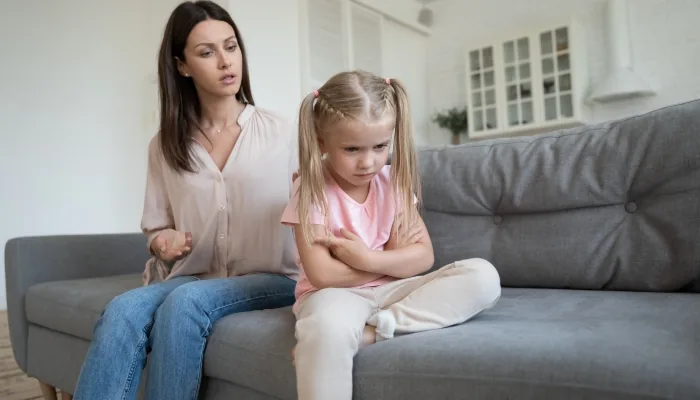
It's important to note that not every child can be described as consistently secure, anxious, or avoidant. Some infants behave in ways that fit none of the categories, producing odd, contradictory, or fearful reactions to their caregivers. When faced with their parents, they may freeze in place, approach while looking away, or show a mix of happy and angry or sad emotions. Main and Solomon (1990)ReferenceMain, M., & Solomon, J. (1990). Procedures for identifying infants as disorganized/disoriented during the Ainsworth Strange Situation. In M. T. Greenberg, D. Cicchetti, & E. M. Cummings (Eds.), Attachment in the preschool years: Theory, research, and intervention (pp. 121–160). University of Chicago Press. proposed a fourth classification, called disorganized attachment, to describe these children whose behavior suggests the breakdown of any coherent strategy for managing distress. The pattern is thought to arise when the caregiver is at once the source of comfort and the source of fear, leaving the child with no workable solution. Disorganized attachment is often tied with childhood abuse, neglect, or frightening parental behavior (Main & Hesse, 1990; van IJzendoorn et al., 1999)ReferencesMain, M., & Hesse, E. (1990). Parents' unresolved traumatic experiences are related to infant disorganized attachment status: Is frightened and/or frightening parental behavior the linking mechanism? In M. T. Greenberg, D. Cicchetti, & E. M. Cummings (Eds.), Attachment in the preschool years: Theory, research, and intervention (pp. 161–182). University of Chicago Press. | van IJzendoorn, M. H., Schuengel, C., & Bakermans-Kranenburg, M. J. (1999). Disorganized attachment in early childhood: Meta-analysis of precursors, concomitants, and sequelae. Development and Psychopathology, 11(2), 225–249.. In low-risk community samples, roughly 15% of infants are classified as disorganized, but that figure climbs steeply in high-risk and mistreated samples (van IJzendoorn et al., 1999)Referencevan IJzendoorn, M. H., Schuengel, C., & Bakermans-Kranenburg, M. J. (1999). Disorganized attachment in early childhood: Meta-analysis of precursors, concomitants, and sequelae. Development and Psychopathology, 11(2), 225–249..
The reason attachment belongs in a chapter on sexual development is that these early patterns do not stay in the nursery. A large body of research finds that childhood attachment styles tend to resemble patterns of romantic attachment when those children grow up (Hazan & Shaver, 1987)ReferenceHazan, C., & Shaver, P. (1987). Romantic love conceptualized as an attachment process. Journal of Personality and Social Psychology, 52(3), 511–524. https://doi.org/10.1037/0022-3514.52.3.511. Adults who were securely attached as children more often find it easy to trust partners and to balance closeness with independence. Adults with anxious histories more often crave closeness while fearing abandonment. Adults with avoidant histories more often keep partners at arm's length. Secure attachment in childhood has been linked to a range of good outcomes later on, such as stronger friendships and more satisfying romantic relationships (Ainsworth et al., 1978)ReferenceAinsworth, M. D. S., Blehar, M. C., Waters, E., & Wall, S. (1978). Patterns of attachment: A psychological study of the Strange Situation. Lawrence Erlbaum Associates.. We'll be revisiting adult attachment styles in a later chapter.
It is also worth noting that attachment patterns are not identical across the world. Cultures differ in how they raise infants — how much they encourage independence, how physically close parents and babies stay, how quickly a crying baby is soothed — and these differences show up in how attachment behaviors are distributed and expressed from one society to the next (Ainsworth et al., 1978)ReferenceAinsworth, M. D. S., Blehar, M. C., Waters, E., & Wall, S. (1978). Patterns of attachment: A psychological study of the Strange Situation. Lawrence Erlbaum Associates.. What looks "avoidant" in one culture's parenting norms may reflect a value placed on early independence. Although, one core insight holds across cultures: warm, responsive caregiving builds the secure foundation on which later love is more easily built.
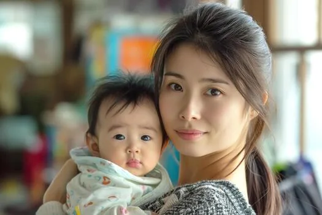
In a laboratory study, a one-year-old barely reacts when her mother leaves the room and then pointedly ignores her when she returns, turning back to the toys. Yet physiological measures show the child's stress levels are elevated the whole time. This pattern best fits which attachment style?
10.4 Learning About Sex: Parents, "The Talk," and Sex Education
Children are going to learn about sex one way or another. If left to educate themselves, children often turn to friends, mass media, and the Internet. These are often low-quality sources of information, where kids are likely to receive rampant misinformation about sex (Buhi et al., 2010)ReferenceBuhi, E. R., Daley, E. M., Fuhrmann, H. J., & Smith, S. A. (2010). An observational study of how young people search for online sexual health information. Journal of American College Health, 58(2), 101–111.. The worst teacher of all, as we will see later in the chapter, may be pornography.
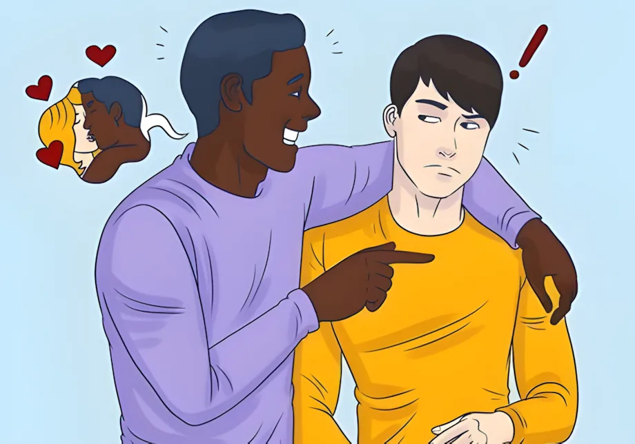
Parents & "The Talk"
Around 75% of parents report having talked to their children about sex. But most parents just teach their children how to say "no." Fewer than half report ever discussing safe sex — such as how to use condoms or other forms of birth control. Not talking about sex is a kind of communication in itself, sending the message that the topic is shameful. Children raised in that silence more often grow into adults who struggle to talk with their own partners and children about sex.
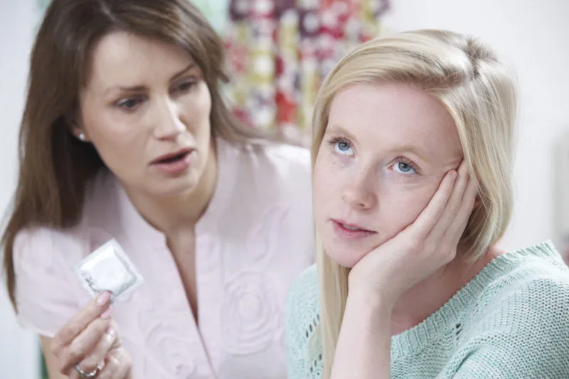
The single most useful thing to understand about "the talk" is that it shouldn't be a one-time event. A single, dreaded conversation somewhere around fifth grade or one awkward "birds and bees" speech does not work well. Like teaching reading, sex education should start when children are small and grow in complexity as they grow up. Experts suggest matching the content to a child's age and stage. An evidence-informed roadmap looks like this:
- Ages 1 to 3: Teach the real names for body parts — penis, testicles, vulva, vagina. Children who know the real words for their body parts are better able to describe what has happened to them, which is one reason this simple practice is considered a small but real protection against abuse. It's also important to not discourage or punish self-exploration. Instead, frame it as something for "private" spaces rather than as something bad.
- Ages 4 to 5: Begin to explain, simply, how a baby grows inside a woman's uterus.
- Ages 6 to 8: Talk about the changes that puberty will bring and explain the basics of how sex works.
- Ages 9 to 11: Discuss masturbation openly as normal and healthy, talk plainly about intercourse and foreplay, and explain how to prevent pregnancy and sexually transmitted infections.
- Ages 12 and up: Ensure access to accurate information about contraceptives, as well as how to access them. This might seem too early to give kids access to condoms, but national surveys find that about 11% of children have had penetrative sex by the time they're 14 years old (Cavazos-Rehg et al., 2009)ReferenceCavazos-Rehg, P. A., Krauss, M. J., Spitznagel, E. L., Schootman, M., Bucholz, K. K., Peipert, J. F., Sanders-Thompson, V., Cottler, L. B., & Bierut, L. J. (2009). Age of sexual debut among US adolescents. Contraception, 80(2), 158–162. https://doi.org/10.1016/j.contraception.2009.02.014.
- At every age: Answer the questions children actually ask, when they ask them, and talk honestly about how sex is portrayed by media, the Internet, and among their peers.
A parent asks their pediatrician why she recommends teaching a toddler the words "penis" and "vulva" instead of cute family nicknames. The best evidence-based answer is that children who know accurate anatomical terms:
Two Kinds of Sex Education
At the level of schools and policy, sex-education programs come in two broad types. Abstinence-only educationAbstinence-only educationA type of sex education that teaches not having sex until marriage as the only acceptable choice and generally avoids information about contraception. Research finds it does not delay when teens have sex and leaves them less prepared when they do.View in glossary → teaches that not having sex until marriage is the only acceptable choice and typically avoids or downplays information about contraception. Comprehensive sex educationComprehensive sex educationA type of sex education that respects abstinence as one valid choice while also providing accurate information about contraception, sexually transmitted infections, consent, healthy relationships, and the diversity of sexuality. Research finds it more effective than abstinence-only approaches at reducing teen pregnancy.View in glossary → also treats abstinence as a valid and respected choice, but also gives students accurate information about contraception, sexually transmitted infections, consent, and what healthy sexual relationships look like.
The evidence strongly favors the comprehensive approach. Abstinence-only programs, including popular virginity-pledge campaigns, have repeatedly been shown to have essentially no effect on whether or when teens have sex (Kohler et al., 2008)ReferenceKohler, P. K., Manhart, L. E., & Lafferty, W. E. (2008). Abstinence-only and comprehensive sex education and the initiation of sexual activity and teen pregnancy. Journal of Adolescent Health, 42(4), 344–351. https://doi.org/10.1016/j.jadohealth.2007.08.026. What they do accomplish is leaving teens less prepared when they do become sexually active, which can raise the risk of unintended pregnancy and infection.
Comprehensive programs make teens considerably more likely to protect themselves when they become active. Contrary to some parents' fears, talking to kids and teens honestly about sex does not make them more likely to have sex. It simply provides them with helpful information they can use when they do become sexually active. Analyzing a national sample, researchers found that teens who received comprehensive sex education had significantly lower odds of teen pregnancy than those who received abstinence-only instruction or none at all (Kohler et al., 2008)ReferenceKohler, P. K., Manhart, L. E., & Lafferty, W. E. (2008). Abstinence-only and comprehensive sex education and the initiation of sexual activity and teen pregnancy. Journal of Adolescent Health, 42(4), 344–351. https://doi.org/10.1016/j.jadohealth.2007.08.026. Despite this, the reach of school-based sex education has been shrinking, with fewer and fewer schools offering it at all (Lindberg et al., 2016)ReferenceLindberg, L. D., Maddow-Zimet, I., & Boonstra, H. (2016). Changes in adolescents' receipt of sex education, 2006–2013. Journal of Adolescent Health, 58(6), 621–627. https://doi.org/10.1016/j.jadohealth.2016.02.004. It is also worth noting that, contrary to the impression left by the occasional loud controversy, the large majority of adults actually support broad-based sex education in schools (Pickering, 2025)ReferencePickering, R. (2025). The debate over sex education and its consequences. Gonzaga University. https://www.gonzaga.edu/news-events/stories/the-debate-over-sex-education-and-its-consequences.
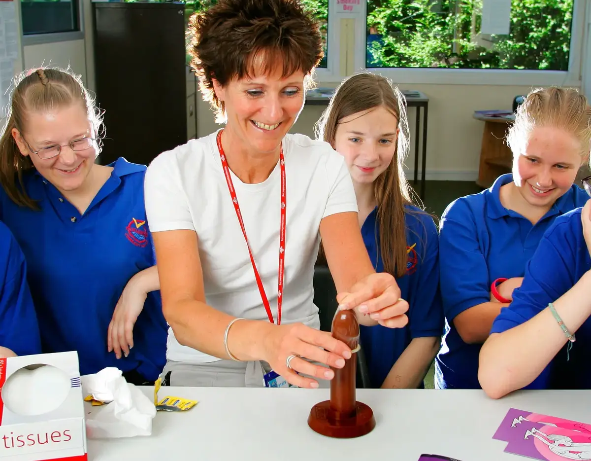
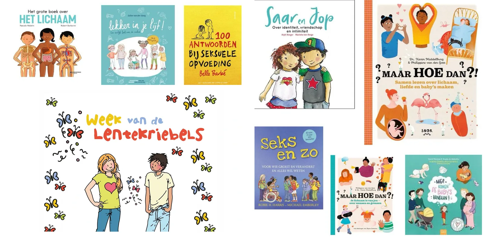
A parent asks a pediatrician when they should start "the talk" with their child. Based on current evidence, the best advice is:
10.5 Sexuality in Adolescence
Adolescence is where sexuality steps into full view. During puberty, the body changes dramatically, and a surge of sex hormones — especially testosterone — drives a sharp rise in sexual interest and behavior in most young teens. Alongside these physical changes, teenagers wrestle with a set of big questions pertaining to their sexual identity: What is my gender, and how do I want to express it? Who am I attracted to? How attractive am I? What kind of relationships do I want? Because teens can now think abstractly, they can also understand that the answers need not be simple or binary, and most are at least somewhat aware of a range of LGBT+ identities.
Public worry about teen sexuality often runs ahead of the facts, so some numbers are worth stating up front. According to data from the Centers for Disease Control and Prevention, around 42% of never-married female teens and 38% of never-married male teens ages 15 to 19 have had sexual intercourse (CDC, 2017)ReferenceCenters for Disease Control and Prevention. (2017). Key statistics from the National Survey of Family Growth. U.S. Department of Health and Human Services.. That is actually a notable decline from earlier decades, which is part of a steady downward trend since the late 1980s. And when teens do have sex, most are cautious about it. The CDC reports that roughly 80% of females and 90% of males who had intercourse before age 20 used contraception the first time (CDC, 2017)ReferenceCenters for Disease Control and Prevention. (2017). Key statistics from the National Survey of Family Growth. U.S. Department of Health and Human Services.. In other words, teens tend to have sex at later ages than people often expect — usually around ages 17–19 — and are often more responsible than parents give them credit for.
The first time someone has sex is known as sexual debut, and scientists have long studied why some teens "debut" earlier than others. A good deal of it comes down to simple biology. For decades, scientists have found that teens who have higher levels of testosterone tend to have sex at earlier ages, and this goes for girls as well as boys (Udry, 1988; Udry et al., 1985; Halpern et al., 1993, 1997, 1998)ReferencesUdry, J. R. (1988). Biological predispositions and social control in adolescent sexual behavior. American Sociological Review, 53(5), 709–722. | Udry, J. R., Billy, J. O. G., Morris, N. M., Groff, T. R., & Raj, M. H. (1985). Serum androgenic hormones motivate sexual behavior in adolescent boys. Fertility and Sterility, 43(1), 90–94. | Halpern, C. T., Udry, J. R., Campbell, B., & Suchindran, C. (1993). Testosterone and pubertal development as predictors of sexual activity: A panel analysis of adolescent males. Psychosomatic Medicine, 55, 436–447. | Halpern, C. T., Udry, J. R., & Suchindran, C. (1997). Testosterone predicts initiation of coitus in adolescent females. Psychosomatic Medicine, 59(2), 161–171. | Halpern, C. T., Udry, J. R., & Suchindran, C. (1998). Monthly measures of salivary testosterone predict sexual activity in adolescent males. Archives of Sexual Behavior, 27(5), 445–465.. In one study of 10th graders (roughly 16 years old), among teens who were in the lowest quarter of testosterone production, only 12% had experienced sexual intercourse. Among those in the highest quarter, nearly 70% had. If you knew nothing else about a teen other than their testosterone levels, you would have a pretty good chance of predicting when they have sex.
Beyond biology, some social factors also matter. Teens who are less affluent, less religious, and less educated tend to have sex earlier, largely because of the norms of the communities around them. In communities with high unemployment or few prospects, there is simply less incentive to delay sex, because there is less sense that waiting will pay off in a better future.
Teen girls and boys are also affected by different factors. Drawing on a large Canadian survey, researchers found that sexual debut for girls was linked to earlier puberty (especially precocious puberty), lower self-esteem, being overweight, and having already tried smoking or drinking (Garriguet, 2005)ReferenceGarriguet, D. (2005). Early sexual intercourse. Health Reports, 16(3), 9–18. Statistics Canada.. Meanwhile, for boys it was linked to poor family relationships and having tried smoking. One consistent theme is that where sex is not discussed and information is scarce, sexual debut tends to come earlier, not later.
One finding that surprises many people is that a parent's attitudes about sex have no impact on when their teen children start having sex. Whether a parent is perfectly fine with their teen daughter or son having sex, or absolutely forbids it, makes no difference. What parental communication does affect is safety: when parents actually educate their children about safer sex, those teens are more likely to protect themselves once they become active. In other words, parents cannot reliably push the start date back, but they can strongly influence whether their child is prepared.
A father is convinced that if he strictly forbids his teenage son from having sex, his son will start later than he otherwise would. Based on the research described in the chapter, what should we most likely expect?
Peers, Pop Culture, and the "Super Peer"
Puberty supplies the drive, but social forces shape how that drive is understood and expressed. In adolescence, peers become powerful referees of what is normal. Beyond the immediate friend group, mass media and social media act as a kind of amplified peer. Super-peer theorySuper-peer theoryThe idea that media characters and celebrities can set teens' perceived norms for behavior — around sex, alcohol, and drugs — much as a real peer group would, but with far wider reach.View in glossary → holds that the characters, celebrities, and influencers teens watch can set the perceived norms for behavior — around alcohol, drugs, and sex (Elmore et al., 2017)ReferenceElmore, K. C., Scull, T. M., & Kupersmidt, J. B. (2017). Media as a "super peer": How adolescents interpret media messages predicts their perception of alcohol and tobacco use norms. Journal of Youth and Adolescence, 46(2), 376–387.. When glamorous, hyper-sexualized stars model a particular version of desirability, many teens absorb the message that they must look and perform a certain way to be worthy. Between fitness gurus and looks-maxxers, teens today often feel a lot of pressure to measure up to these unrealistic standards (Moreno et al., 2009)ReferenceMoreno, M. A., Parks, M. R., Zimmerman, F. J., Brito, T. E., & Christakis, D. A. (2009). Display of health risk behaviors on MySpace by adolescents. Archives of Pediatrics & Adolescent Medicine, 163(1), 27–34..
The phone has also introduced sextingSextingThe sending, receiving, or forwarding of sexually explicit messages, photos, or videos through a phone or other digital device. Roughly one in four adolescents reports having sent such an image of themselves.View in glossary → — the sending, receiving, or forwarding of sexually explicit messages, photos, or videos through a digital device (O'Keeffe & Clarke-Pearson, 2011)ReferenceO'Keeffe, G. S., & Clarke-Pearson, K. (2011). The impact of social media on children, adolescents, and families. Pediatrics, 127(4), 800–804. https://doi.org/10.1542/peds.2011-0054. By one meta-analysis, roughly 15% of teens have sent a sext of themselves and about 25% have received one (Madigan et al., 2018)ReferenceMadigan, S., Ly, A., Rash, C. L., Van Ouytsel, J., & Temple, J. R. (2018). Prevalence of multiple forms of sexting behavior among youth: A systematic review and meta-analysis. JAMA Pediatrics, 172(4), 327–335. https://doi.org/10.1001/jamapediatrics.2017.5314. Sexting carries real risks — images can be shared far beyond the intended recipient, and in some cases minors have faced legal consequences — which makes it an important topic for honest conversation rather than panic.
Learning from Pornography
Perhaps the most consequential media shift in recent years is the advent of free and easily available pornography. In a demographically representative national survey of United States teens, the average age of first exposure was 12, with about 15% having seen online pornography by age 10 (Robb & Mann, 2023)ReferenceRobb, M. B., & Mann, S. (2023). Teens and pornography. Common Sense Media.. By age 17, 73% of teen girls and boys report having seen hardcore pornography.
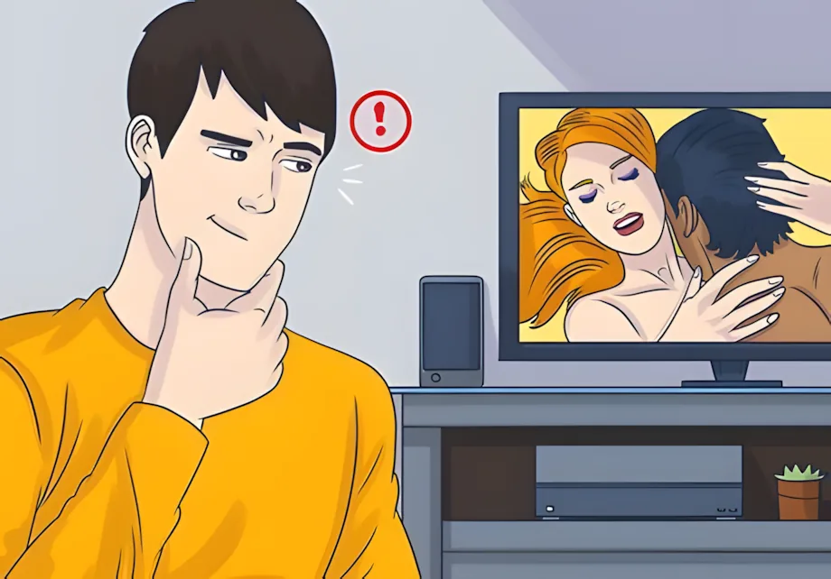
The concern is not moral so much as educational: pornography is a poor sex-ed teacher, but a large share of young people treat it as one anyway. In qualitative interviews, low-income Black and Hispanic youth described pornography as a primary source of information about how sex is done, using it to fill the gaps left by adults and schools (Rothman et al., 2015)ReferenceRothman, E. F., Kaczmarsky, C., Burke, N., Jansen, E., & Baughman, A. (2015). "Without porn ... I wouldn't know half the things I know now": A qualitative study of pornography use among a sample of urban, low-income, Black and Hispanic youth. The Journal of Sex Research, 52(7), 736–746.. Indeed, studies show that teens who receive abstinence-only sex education are more likely to watch porn, perhaps as a way to better educate themselves about sex (Fraumeni-McBride & Willoughby, 2024; Nie, 2021)ReferencesFraumeni-McBride, J., & Willoughby, B. J. (2024). Women's pornography use patterns and sexuality education in U.S. public schools. Archives of Sexual Behavior, 53(9), 3437–3449. https://doi.org/10.1007/s10508-024-02905-6 | Nie, F. (2021). Adolescent porn viewing and religious context: Is the eye still the light of the body? Deviant Behavior, 42(11), 1382–1395. https://doi.org/10.1080/01639625.2020.1747154. In nationally representative samples, 1 in 5 teens say that pornography reflects "real world sex," and many more report learning about sex from porn (Kuan et al., 2022)ReferenceKuan, H. T., Senn, C. Y., & Garcia, D. M. (2022). The role of discrepancies between online pornography-created ideals and actual sexual relationships in heterosexual men's sexual satisfaction and well-being. SAGE Open, 12(1). https://doi.org/10.1177/21582440221079923.
The trouble lies in what the medium teaches. Content analyses find that mainstream pornography offers an unrealistic picture of what bodies look like, how long sex lasts, and how arousal and pleasure actually work. Content analyses show that nearly 90% of porn videos portray extremely aggressive sex acts, such as slapping, choking, and rough sex, which is mostly directed at women (Bridges et al., 2010; Fritz et al., 2020)ReferencesBridges, A. J., Wosnitzer, R., Scharrer, E., Sun, C., & Liberman, R. (2010). Aggression and sexual behavior in best-selling pornography videos: A content analysis update. Violence Against Women, 16(10), 1065–1085. | Fritz, N., Malic, V., Paul, B., & Zhou, Y. (2020). A descriptive analysis of the types, targets, and relative frequency of aggression in mainstream pornography. Archives of Sexual Behavior, 49(8), 3041–3053.. Beyond what is depicted is what is not shown in pornography. Porn almost never features the use of contraceptives or affirmative consent. Teens who watch porn regularly seem to take note. They tend to hold more gender-stereotyped beliefs about sex (e.g., men should be sexually aggressive and women should be sexually receptive), less confidence about their bodies and sexual performance, and greater acceptance of sexual aggression (Peter & Valkenburg, 2016)ReferencePeter, J., & Valkenburg, P. M. (2016). Adolescents and pornography: A review of 20 years of research. The Journal of Sex Research, 53(4–5), 509–531..
At this point, it's hard to know what long-term effects pornography has on child development. It's just too early to tell. Interestingly, while only 30% of teens think porn has affected them personally, 70% reported that they knew someone who was negatively affected by it. Studies have already found that boys and young men who regularly watch porn are more likely to be physically aggressive during sex and are more likely to pressure partners in the bedroom (Rothman et al., 2021)ReferenceRothman, E. F., Beckmeyer, J. J., Herbenick, D., Fu, T.-C., Dodge, B., & Fortenberry, J. D. (2021). The prevalence of using pornography for information about how to have sex: Findings from a nationally representative survey of U.S. adolescents and young adults. Archives of Sexual Behavior, 50(2), 629–646. https://doi.org/10.1007/s10508-020-01877-7. One clear example is choking during sex. What was once extremely rare, choking has become common among teens and young adults (Herbenick et al., 2020)ReferenceHerbenick, D., Fu, T. C., Wright, P., Paul, B., Gradus, R., Bauer, J., & Jones, R. (2020). Diverse sexual behaviors and pornography use: Findings from a nationally representative probability survey of Americans aged 18 to 60 years. The Journal of Sexual Medicine, 17(4), 623–633.. In one sample of urban youth, 44% had been asked by a partner to do something sexual the partner had seen in pornography (Rothman & Adhia, 2016)ReferenceRothman, E. F., & Adhia, A. (2016). Adolescent pornography use and dating violence among a sample of primarily Black and Hispanic, urban-residing, underage youth. Behavioral Sciences, 6(1), 1.. This was most often a girl who was asked to do rough sex, and the vast majority reported not enjoying or wanting to do the activity.
Sex educators are just starting to catch up, with growing efforts aimed at educating young people about porn specifically. This approach has been termed pornography literacy (Rothman et al., 2018)ReferenceRothman, E. F., Adhia, A., Christensen, T. T., Paruk, J., Alder, J., & Daley, N. (2018). A pornography literacy class for youth: Results of a feasibility and efficacy pilot study. American Journal of Sexuality Education, 13(1), 1–17.. It involves teaching teens to treat porn as scripted entertainment, rather than as a documentary record of how sex happens in the real world. A good porn-literacy lesson makes a few things explicit:
- The bodies on screen are curated and often surgically or digitally altered.
- The stamina and choreography shown on screen are performances rather than what normally occurs in the bedroom.
- While most porn depicts sex that is aggressive or even violent, most people report disliking that type of sex.
Early evaluations of such programs are encouraging. A pilot of a five-session curriculum called The Truth About Pornography was shown to shift attitudes about porn in the intended direction (Rothman et al., 2018)ReferenceRothman, E. F., Adhia, A., Christensen, T. T., Paruk, J., Alder, J., & Daley, N. (2018). A pornography literacy class for youth: Results of a feasibility and efficacy pilot study. American Journal of Sexuality Education, 13(1), 1–17.. Having gone through the program, teens were less likely to view porn as realistic or as a good way to learn about sex. Another study found that porn literacy programs can help weaken the link between viewing porn and objectifying women (Vandenbosch & van Oosten, 2017)ReferenceVandenbosch, L., & van Oosten, J. M. F. (2017). The relationship between online pornography and the sexual objectification of women: The attenuating role of porn literacy education. Journal of Communication, 67(6), 1015–1036.. The most honest message to a teenager is not that pornography is evil, but that it is fiction: a genre with its own conventions, made to arouse and to sell. It is a poor source to learn what real bodies look like, how long sex lasts, or what a partner actually wants.
A 16-year-old tells a counselor that he learned "how sex is supposed to go" mostly from pornography and now feels anxious that his body and experiences do not measure up. The counselor recognizes this as a common result of which issue?
Teen Pregnancy
One great development over the last few decades is the continually falling rate of unplanned teen pregnancies. Each year, a little over 1% of U.S. teen girls give birth, a rate that has dropped sharply since its peak in 1991 (CDC, 2024)ReferenceCenters for Disease Control and Prevention. (2024). About teen pregnancy. U.S. Department of Health and Human Services. https://www.cdc.gov/reproductive-health/teen-pregnancy/. The main engine of that decline is straightforward: teens are simply having less sex than they used to, and those who are sexually active are using contraception more consistently.
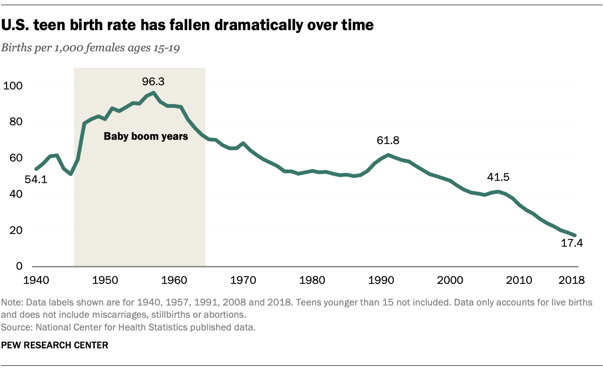
Even so, the U.S. still has one of the highest teen pregnancy rates among wealthy Western nations (CDC, 2024)ReferenceCenters for Disease Control and Prevention. (2024). About teen pregnancy. U.S. Department of Health and Human Services. https://www.cdc.gov/reproductive-health/teen-pregnancy/. Within the country, the highest rates cluster in Southern states — the same states that most often rely on abstinence-only education and where teens have less access to contraception.
The stakes are high because early parenthood is hard on everyone involved. Teen pregnancies carry large costs, both personal and public (Kearney & Levine, 2012)ReferenceKearney, M. S., & Levine, P. B. (2012). Why is the teen birth rate in the United States so high and why does it matter? Journal of Economic Perspectives, 26(2), 141–166. https://doi.org/10.1257/jep.26.2.141. The children of teen mothers face elevated risks across a range of outcomes, from poorer health to higher high-school dropout rates (Kearney & Levine, 2012)ReferenceKearney, M. S., & Levine, P. B. (2012). Why is the teen birth rate in the United States so high and why does it matter? Journal of Economic Perspectives, 26(2), 141–166. https://doi.org/10.1257/jep.26.2.141. Teen mothers themselves are less likely than their peers to obtain a college education and often face economic hardship. None of this is about blaming young parents. It is about recognizing that the "easy solution" so often proposed — simply telling teens to abstain — is exactly the approach that leads to more teen pregnancies.
A health teacher wants to lower teen pregnancy rates in her district. Based on the research, which approach is most likely to succeed?
Study Guide
After reading Chapter 10, you should be able to answer each of the questions below. Use your own words where possible, and support your answers with examples or evidence from the text.
10.1 The Many Dimensions of Sexual Development
- Explain why the text argues that sexuality "begins before birth." What evidence supports the idea that even infants are capable of sexual response, and why does this not mean that infants experience sexual desire the way adults do?
- Name and briefly describe the five dimensions of sexual development. Choose one dimension and trace how it might change from infancy to preadolescence.
- Why is research on childhood sexuality so limited? Describe at least two specific obstacles that make this area harder to study than other topics in human sexuality.
10.2 From Infancy Through Preadolescence
- What is the "conspiracy of silence," and where did the modern ideal of childhood sexual innocence come from? What does research suggest about whether children are harmed by seeing ordinary nudity or by learning that their parents are sexual beings?
- What is comfort contact, and why does it matter for later development? Describe what is typical in the erotic and social dimensions during infancy.
- What is sex play, and roughly how common is it? Explain how caregivers should ideally respond when they encounter it, and why overreacting can be counterproductive.
- What is gender constancy, and how does a child's understanding of gender change across early childhood and into preadolescence? Why might gender-nonconforming boys have a harder social time than gender-nonconforming girls?
- Summarize what research by Kristina Olson and colleagues has found about transgender children. In what ways are they similar to their cisgender peers, and what does the research suggest about the sources of anxiety and depression in this group?
10.3 Attachment: A First Blueprint for Love
- What is attachment, and how does it form in infancy? Explain the reasoning behind the claim that these early bonds shape a person's capacity for love and sexual closeness in adulthood.
- Describe the Strange Situation procedure. Why are the reunion moments considered more revealing than the separations?
- Compare secure, anxious, and avoidant attachment styles. For each, describe how a child typically behaves during the Strange Situation and what underlying expectation about the caregiver the pattern reflects.
10.4 Learning About Sex: Parents, "The Talk," and Sex Education
- The text argues that "the talk" should not be a single conversation. Explain this claim and describe how the content of sex education should change as a child grows from a toddler to a teenager.
- Why does the text say that using correct anatomical names for body parts is about more than reducing awkwardness? Connect this practice to abuse prevention.
- Compare abstinence-only and comprehensive sex education. What does the research say about the effects of each on the timing of teen sex, on teen pregnancy, and on protective behavior? Use this evidence to respond to someone who claims comprehensive sex education "just encourages teens to have more sex."
10.5 Sexuality in Adolescence
- Public perception often holds that teen sexual activity and teen pregnancy are rising. What do the actual data show, and what are the main reasons behind these trends?
- Explain super-peer theory and the idea of the "media super-peer." How can social media lead teens to misjudge what their peers are actually doing, and why does that matter?
- Why does the text describe pornography as a poor teacher of sex? Identify at least three specific misconceptions that teens may absorb from learning about sex through pornography.
- The chapter reports that a parent's attitudes about sex have little effect on when their teen becomes sexually active, but that parental communication still matters. Resolve this apparent contradiction: what exactly can parents influence, and what can they not?
Key Terms
- Abstinence-only education
- A type of sex education that teaches not having sex until marriage as the only acceptable choice and generally avoids information about contraception. Research finds it does not delay when teens have sex and leaves them less prepared when they do.
- Anxious attachment
- An insecure attachment style in which a child is clingy and easily distressed, and at reunion seeks comfort while also resisting it. It reflects uncertainty about whether the caregiver can be relied on. Also called insecure or resistant attachment.
- Asexual
- Having little or no sexual attraction to others. The chapter uses the term to correct the mistaken idea that children are entirely without sexual feeling or response.
- Attachment
- The deep emotional bond that forms between an infant and a primary caregiver in the first years of life. Its quality shapes a person's capacity for emotional and sexual closeness in adulthood.
- Attachment styles
- Consistent patterns in how infants relate to their caregivers, usually grouped as secure, anxious, and avoidant. These early patterns tend to persist and to resemble a person's romantic attachment style as an adult.
- Avoidant attachment
- An insecure attachment style in which a child appears unbothered by separation and ignores or avoids the caregiver at reunion. The outward calm often masks underlying stress rather than reflecting true security.
- Body map
- A person's developing internal sense of which parts of the body feel good and which feel bad. It begins to form in infancy and is shaped heavily by how caregivers respond to a child's exploration.
- Cognitive dimension
- The strand of sexual development involving a child's growing mental understanding of sex, which develops alongside language and a sense of being a separate self.
- Comfort contact
- The warm physical touch that soothes and reassures an infant. In infancy this need is not yet separated from other needs, and being deprived of it can cause lasting harm.
- Comprehensive sex education
- A type of sex education that respects abstinence as one valid choice while also providing accurate information about contraception, sexually transmitted infections, consent, healthy relationships, and the diversity of sexuality. Research finds it more effective than abstinence-only approaches at reducing teen pregnancy.
- Conspiracy of silence
- The unspoken agreement among the adults around a child never to discuss sex openly. It tends to teach children that sex is a shameful topic.
- Erotic dimension
- The strand of sexual development involving how a person comes to experience and interpret pleasure, including whether they associate it with joy or with guilt.
- Gender constancy
- The understanding, which develops in steps during childhood, that a person's gender is stable over time and is not changed by surface features like a haircut or clothing.
- Gender dimension
- The strand of sexual development involving how a person's recognition of gender, their own and others', takes shape and grows more sophisticated with age.
- Love maps
- A person's developing internal picture of what a romantic and sexual relationship should look and feel like. Love maps begin forming in early childhood and grow richer through preadolescence.
- Masturbation
- Self-touching of the genitals that produces pleasurable feeling. In infancy and early childhood it is unfocused and experienced as self-soothing, with no adult sexual meaning.
- Media super-peer
- The idea that social media can act like an amplified peer group, convincing teens that others are engaging in riskier or more frequent sexual behavior than they actually are, which makes those behaviors seem normal and expected.
- Orientation dimension
- The strand of sexual development involving how a person comes to recognize whom they are attracted to and develops the capacity to form romantic and sexual attachments.
- Secure attachment
- The healthiest and most common attachment style, in which a child uses the caregiver as a safe base, is distressed by separation, and is quickly comforted at reunion. It reflects trust that the caregiver is reliable.
- Sex play
- Curiosity-driven behavior, such as "playing doctor," in which young children show or touch one another's genitals. It reflects exploration and imitation of adult roles rather than adult-style sexual interaction, and it is reported by roughly a quarter to a half of parents.
- Sexting
- The sending, receiving, or forwarding of sexually explicit messages, photos, or videos through a phone or other digital device. Roughly one in four adolescents reports having sent such an image of themselves.
- Sexual self-consciousness
- A new awareness of oneself as a sexual being that emerges in preadolescence, often accompanied by a deliberate search for information about sex.
- The strand of sexual development involving the degree to which a child's experience of sexuality begins to include other people. Also called the interpersonal dimension.
- Strange Situation
- A laboratory procedure developed by Mary Ainsworth for studying attachment, in which a caregiver and infant go through a series of separations and reunions. The reunion behavior reveals the quality of the underlying bond.
- Super-peer theory
- The idea that media characters and celebrities can set teens' perceived norms for behavior — around sex, alcohol, and drugs — much as a real peer group would, but with far wider reach.
References
- Ainsworth, M. D. S., Blehar, M. C., Waters, E., & Wall, S. (1978). Patterns of attachment: A psychological study of the Strange Situation. Lawrence Erlbaum Associates.
- Astle, S., Rivas-Koehl, D., Rivas-Koehl, M., & Mendez, S. (2023). Timing the talks: Exploring children's ages at parent–child conversations about gender, sexual orientation, and various sexual behaviors. Sexuality Research and Social Policy, 21, 1–21. https://doi.org/10.1007/s13178-023-00894-0
- Beard, K. W., Keeney, J., & Thoms, J. (2015). Childhood and adolescent sexual behaviors predict adult sexual orientations. Cogent Psychology, 2(1), Article 1067568. https://doi.org/10.1080/23311908.2015.1067568
- Berk, L. E. (2009). Child development (8th ed.). Pearson.
- Bowlby, J. (1969). Attachment and loss: Vol. 1. Attachment. Basic Books.
- Bridges, A. J., Wosnitzer, R., Scharrer, E., Sun, C., & Liberman, R. (2010). Aggression and sexual behavior in best-selling pornography videos: A content analysis update. Violence Against Women, 16(10), 1065–1085.
- Buhi, E. R., Daley, E. M., Fuhrmann, H. J., & Smith, S. A. (2010). An observational study of how young people search for online sexual health information. Journal of American College Health, 58(2), 101–111.
- Cassidy, J., & Berlin, L. J. (1994). The insecure/ambivalent pattern of attachment: Theory and research. Child Development, 65(4), 971–991.
- Cavazos-Rehg, P. A., Krauss, M. J., Spitznagel, E. L., Schootman, M., Bucholz, K. K., Peipert, J. F., Sanders-Thompson, V., Cottler, L. B., & Bierut, L. J. (2009). Age of sexual debut among US adolescents. Contraception, 80(2), 158–162. https://doi.org/10.1016/j.contraception.2009.02.014
- Centers for Disease Control and Prevention. (2017). Key statistics from the National Survey of Family Growth. U.S. Department of Health and Human Services.
- Centers for Disease Control and Prevention. (2024). About teen pregnancy. U.S. Department of Health and Human Services. https://www.cdc.gov/reproductive-health/teen-pregnancy/
- De Graaf, H., & Rademakers, J. (2006). Sexual development of prepubertal children. Journal of Psychology & Human Sexuality, 18(1), 1–21.
- De Wolff, M. S., & van IJzendoorn, M. H. (1997). Sensitivity and attachment: A meta-analysis on parental antecedents of infant attachment. Child Development, 68(4), 571–591.
- Elmore, K. C., Scull, T. M., & Kupersmidt, J. B. (2017). Media as a "super peer": How adolescents interpret media messages predicts their perception of alcohol and tobacco use norms. Journal of Youth and Adolescence, 46(2), 376–387.
- Fraumeni-McBride, J., & Willoughby, B. J. (2024). Women's pornography use patterns and sexuality education in U.S. public schools. Archives of Sexual Behavior, 53(9), 3437–3449. https://doi.org/10.1007/s10508-024-02905-6
- Friedrich, W. N., Fisher, J., Broughton, D., Houston, M., & Shafran, C. R. (1998). Normative sexual behavior in children: A contemporary sample. Pediatrics, 101(4), e9. https://doi.org/10.1542/peds.101.4.e9
- Fritz, N., Malic, V., Paul, B., & Zhou, Y. (2020). A descriptive analysis of the types, targets, and relative frequency of aggression in mainstream pornography. Archives of Sexual Behavior, 49(8), 3041–3053.
- Garriguet, D. (2005). Early sexual intercourse. Health Reports, 16(3), 9–18. Statistics Canada.
- Gilchrist, T. E. (2019, October 2). One Million Moms: Mattel's gender-inclusive dolls promote "sin." The Advocate. https://www.advocate.com/business/2019/10/02/one-millions-moms-mattels-gender-inclusive-dolls-promote-sin
- Grannan, C. (2021). Has pink always been a "girly" color? Encyclopædia Britannica. https://www.britannica.com/story/has-pink-always-been-a-girly-color
- Grossmann, K., Grossmann, K. E., Spangler, G., Suess, G., & Unzner, L. (1985). Maternal sensitivity and newborns' orientation responses as related to quality of attachment in northern Germany. In I. Bretherton & E. Waters (Eds.), Growing points of attachment theory and research. Monographs of the Society for Research in Child Development, 50(1–2, Serial No. 209), 233–256.
- Halpern, C. T., Udry, J. R., Campbell, B., & Suchindran, C. (1993). Testosterone and pubertal development as predictors of sexual activity: A panel analysis of adolescent males. Psychosomatic Medicine, 55, 436–447.
- Halpern, C. T., Udry, J. R., & Suchindran, C. (1997). Testosterone predicts initiation of coitus in adolescent females. Psychosomatic Medicine, 59(2), 161–171.
- Halpern, C. T., Udry, J. R., & Suchindran, C. (1998). Monthly measures of salivary testosterone predict sexual activity in adolescent males. Archives of Sexual Behavior, 27(5), 445–465.
- Halpern, H. P., & Perry-Jenkins, M. (2016). Parents' gender ideology and gendered behavior as predictors of children's gender-role attitudes: A longitudinal exploration. Sex Roles, 74(11–12), 527–542.
- Hazan, C., & Shaver, P. (1987). Romantic love conceptualized as an attachment process. Journal of Personality and Social Psychology, 52(3), 511–524. https://doi.org/10.1037/0022-3514.52.3.511
- Herbenick, D., Fu, T. C., Wright, P., Paul, B., Gradus, R., Bauer, J., & Jones, R. (2020). Diverse sexual behaviors and pornography use: Findings from a nationally representative probability survey of Americans aged 18 to 60 years. The Journal of Sexual Medicine, 17(4), 623–633.
- Hill, P. S. (Ed.). (2014). Laura Ingalls Wilder: Pioneer girl — The annotated autobiography. South Dakota Historical Society Press.
- Kearney, M. S., & Levine, P. B. (2012). Why is the teen birth rate in the United States so high and why does it matter? Journal of Economic Perspectives, 26(2), 141–166. https://doi.org/10.1257/jep.26.2.141
- Kim, E. J., Park, B., Kim, S. K., Park, M. J., Lee, J. Y., Jo, A. R., Kim, M. J., & Shin, H. N. (2023). A meta-analysis of the effects of comprehensive sexuality education programs on children and adolescents. Healthcare, 11(18), 2511. https://doi.org/10.3390/healthcare11182511
- Klass, P. (2018, December 10). Why is children's masturbation such a secret? The New York Times. https://www.nytimes.com/2018/12/10/well/family/why-is-childrens-masturbation-such-a-secret.html
- Kohlberg, L. (1966). A cognitive-developmental analysis of children's sex-role concepts and attitudes. In E. E. Maccoby (Ed.), The development of sex differences (pp. 82–173). Stanford University Press.
- Kohler, P. K., Manhart, L. E., & Lafferty, W. E. (2008). Abstinence-only and comprehensive sex education and the initiation of sexual activity and teen pregnancy. Journal of Adolescent Health, 42(4), 344–351. https://doi.org/10.1016/j.jadohealth.2007.08.026
- Kuan, H. T., Senn, C. Y., & Garcia, D. M. (2022). The role of discrepancies between online pornography-created ideals and actual sexual relationships in heterosexual men's sexual satisfaction and well-being. SAGE Open, 12(1). https://doi.org/10.1177/21582440221079923
- Larsson, I., & Svedin, C.-G. (2002). Sexual experiences in childhood: Young adults' recollections. Archives of Sexual Behavior, 31(3), 263–273. https://doi.org/10.1023/A:1015252903931
- Larsson, I., Svedin, C.-G., & Friedrich, W. N. (2000). Differences and similarities in sexual behaviour among preschoolers in Sweden and USA. Nordic Journal of Psychiatry, 54(4), 251–257.
- Lei, L., & South, S. (2020). Explaining the decline in young adult sexual activity in the United States. Journal of Marriage and Family, 83, 280–295. https://doi.org/10.1111/jomf.12723
- Li, G., & Hines, M. (2016). In search of emerging same-sex sexuality: Romantic attractions at age 13 years. Archives of Sexual Behavior, 45(7), 1839–1849. https://doi.org/10.1007/s10508-016-0726-2
- Lindberg, L. D., Maddow-Zimet, I., & Boonstra, H. (2016). Changes in adolescents' receipt of sex education, 2006–2013. Journal of Adolescent Health, 58(6), 621–627. https://doi.org/10.1016/j.jadohealth.2016.02.004
- Lobue, V., & DeLoache, J. S. (2011). Pretty in pink: The early development of gender-stereotyped colour preferences. The British Journal of Developmental Psychology, 29(Pt 3), 656–667. https://doi.org/10.1111/j.2044-835X.2011.02027.x
- Madigan, S., Ly, A., Rash, C. L., Van Ouytsel, J., & Temple, J. R. (2018). Prevalence of multiple forms of sexting behavior among youth: A systematic review and meta-analysis. JAMA Pediatrics, 172(4), 327–335. https://doi.org/10.1001/jamapediatrics.2017.5314
- Main, M., & Hesse, E. (1990). Parents' unresolved traumatic experiences are related to infant disorganized attachment status: Is frightened and/or frightening parental behavior the linking mechanism? In M. T. Greenberg, D. Cicchetti, & E. M. Cummings (Eds.), Attachment in the preschool years: Theory, research, and intervention (pp. 161–182). University of Chicago Press.
- Main, M., & Solomon, J. (1990). Procedures for identifying infants as disorganized/disoriented during the Ainsworth Strange Situation. In M. T. Greenberg, D. Cicchetti, & E. M. Cummings (Eds.), Attachment in the preschool years: Theory, research, and intervention (pp. 121–160). University of Chicago Press.
- Martinson, F. M. (1994). The sexual life of children. Bergin & Garvey.
- Meizner, I. (1987). Sonographic observation of in utero fetal "masturbation." Journal of Ultrasound in Medicine, 6(2), 111. https://doi.org/10.7863/jum.1987.6.2.111
- Money, J. (1986). Lovemaps: Clinical concepts of sexual/erotic health and pathology, paraphilia, and gender transposition in childhood, adolescence, and maturity. Irvington.
- Moreno, M. A., Parks, M. R., Zimmerman, F. J., Brito, T. E., & Christakis, D. A. (2009). Display of health risk behaviors on MySpace by adolescents. Archives of Pediatrics & Adolescent Medicine, 163(1), 27–34.
- Nie, F. (2021). Adolescent porn viewing and religious context: Is the eye still the light of the body? Deviant Behavior, 42(11), 1382–1395. https://doi.org/10.1080/01639625.2020.1747154
- Okami, P. (1995). Childhood exposure to parental nudity, parent-child co-sleeping, and "primal scenes": A review of clinical opinion and empirical evidence. The Journal of Sex Research, 32(1), 51–63. https://doi.org/10.1080/00224499509551774
- Okami, P., Olmstead, R., Abramson, P. R., & Pendleton, L. (1998). Early childhood exposure to parental nudity and scenes of parental sexuality ("primal scenes"): An 18-year longitudinal study of outcome. Archives of Sexual Behavior, 27(4), 361–384. https://doi.org/10.1023/a:1018736109563
- O'Keeffe, G. S., & Clarke-Pearson, K. (2011). The impact of social media on children, adolescents, and families. Pediatrics, 127(4), 800–804. https://doi.org/10.1542/peds.2011-0054
- Olson, K. R., Durwood, L., DeMeules, M., & McLaughlin, K. A. (2016). Mental health of transgender children who are supported in their identities. Pediatrics, 137(3), e20153223. https://doi.org/10.1542/peds.2015-3223
- Olson, K. R., Key, A. C., & Eaton, N. R. (2015). Gender cognition in transgender children. Psychological Science, 26(4), 467–474. https://doi.org/10.1177/0956797614568156
- Peter, J., & Valkenburg, P. M. (2016). Adolescents and pornography: A review of 20 years of research. The Journal of Sex Research, 53(4–5), 509–531.
- Pickering, R. (2025). The debate over sex education and its consequences. Gonzaga University. https://www.gonzaga.edu/news-events/stories/the-debate-over-sex-education-and-its-consequences
- Quinn, P. C., Yahr, J., Kuhn, A., Slater, A. M., & Pascalis, O. (2002). Representation of the gender of human faces by infants: A preference for female. Perception, 31(9), 1109–1121. https://doi.org/10.1068/p3331
- Robb, M. B., & Mann, S. (2023). Teens and pornography. Common Sense Media.
- Rothman, E. F., & Adhia, A. (2016). Adolescent pornography use and dating violence among a sample of primarily Black and Hispanic, urban-residing, underage youth. Behavioral Sciences, 6(1), 1.
- Rothman, E. F., Adhia, A., Christensen, T. T., Paruk, J., Alder, J., & Daley, N. (2018). A pornography literacy class for youth: Results of a feasibility and efficacy pilot study. American Journal of Sexuality Education, 13(1), 1–17.
- Rothman, E. F., Beckmeyer, J. J., Herbenick, D., Fu, T.-C., Dodge, B., & Fortenberry, J. D. (2021). The prevalence of using pornography for information about how to have sex: Findings from a nationally representative survey of U.S. adolescents and young adults. Archives of Sexual Behavior, 50(2), 629–646. https://doi.org/10.1007/s10508-020-01877-7
- Rothman, E. F., Kaczmarsky, C., Burke, N., Jansen, E., & Baughman, A. (2015). "Without porn ... I wouldn't know half the things I know now": A qualitative study of pornography use among a sample of urban, low-income, Black and Hispanic youth. The Journal of Sex Research, 52(7), 736–746.
- Rough, B. J. (2018, August 27). How the Dutch do sex ed. The Atlantic. https://www.theatlantic.com/family/archive/2018/08/the-benefits-of-starting-sex-ed-at-age-4/568225/
- Rutgers International. (2023, February). Comprehensive sexuality education in the Netherlands [Fact sheet]. https://rutgers.international/wp-content/uploads/2023/02/20230123-CSE-factsheet-Rutgers.pdf
- South, S. J., & Lei, L. (2021). Why are fewer young adults having casual sex? Socius, 7. https://doi.org/10.1177/2378023121996854
- Spangler, G., & Grossmann, K. E. (1993). Biobehavioral organization in securely and insecurely attached infants. Child Development, 64(5), 1439–1450.
- Stanton, L. (2007). Spin the bottle: Kissing games from romantic to risqué. Running Press.
- Stephens, T., Spevak, R., Rogalin, C. L., & Hirshfield, L. E. (2016). Drawing doctors vs. nurses: Gendered perceptions of health professionals. Journal of Inquiry and Student Scholarship, 1(1), Article 2.
- Takahashi, K. (1986). Examining the Strange Situation procedure with Japanese mothers and 12-month-old infants. Developmental Psychology, 22(2), 265–270.
- Toomey, R. B., Ryan, C., Diaz, R. M., Card, N. A., & Russell, S. T. (2010). Gender-nonconforming lesbian, gay, bisexual, and transgender youth: School victimization and young adult psychosocial adjustment. Developmental Psychology, 46(6), 1580–1589. https://doi.org/10.1037/a0020705
- Udry, J. R. (1988). Biological predispositions and social control in adolescent sexual behavior. American Sociological Review, 53(5), 709–722.
- Udry, J. R., Billy, J. O. G., Morris, N. M., Groff, T. R., & Raj, M. H. (1985). Serum androgenic hormones motivate sexual behavior in adolescent boys. Fertility and Sterility, 43(1), 90–94.
- van Beusekom, G., Collier, K. L., Bos, H. M. W., Sandfort, T. G. M., & Overbeek, G. (2020). Gender nonconformity and peer victimization: Sex and sexual attraction differences by age. Journal of Sex Research, 57(2), 234–246. https://doi.org/10.1080/00224499.2019.1591334
- van IJzendoorn, M. H., & Kroonenberg, P. M. (1988). Cross-cultural patterns of attachment: A meta-analysis of the Strange Situation. Child Development, 59(1), 147–156.
- van IJzendoorn, M. H., Schuengel, C., & Bakermans-Kranenburg, M. J. (1999). Disorganized attachment in early childhood: Meta-analysis of precursors, concomitants, and sequelae. Development and Psychopathology, 11(2), 225–249.
- Vandenbosch, L., & van Oosten, J. M. F. (2017). The relationship between online pornography and the sexual objectification of women: The attenuating role of porn literacy education. Journal of Communication, 67(6), 1015–1036.
- Wanta, J. W., Niforatos, J. D., Durbak, E., Viguera, A., & Altinay, M. (2019). Mental health diagnoses among transgender patients in the clinical setting: An all-payer electronic health record study. Transgender Health, 4(1), 313–315. https://doi.org/10.1089/trgh.2019.0029
- Yang, T. A., Dolan, A., Hernandez, V., Kaufman, A., Kruk, M., Robbins, K., & Conley, T. D. (2024). Associations between negative sexual messaging in childhood and sex guilt in adulthood. Analyses of Social Issues and Public Policy, 24(3), 997–1016. https://doi.org/10.1111/asap.12423